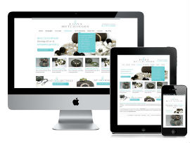
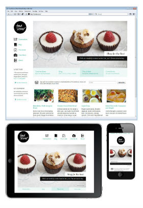

Responsive Design
 "Responsive Design" is the idea that a webpage should dynamically resize to deal with different resolutions. It focuses primarily on the definining principle of "flexibility," and allows a single design to function on all devices by making use of flexible grids and media queries.
Key Points
- Resizes Dynamically, works without refresh
- Supports a hypothetically infinite range of resolutions
- An entirely front-end solution
- Requires more information to be loaded to accomodate all resolutions
Adaptive Design
 "Adaptive Design" is the idea that a different webpage altogether should be served to devices of differing resolutions.
- Offers more granular control over elements and their positioning (as the webpage can be designed manually for each supported resolution).
- Requires that each supported resolution be specifically designed for
- Does not require modification to the original webpage
- Requires back-end/serverside support to detect User Agent, as well as up-to-date device lists